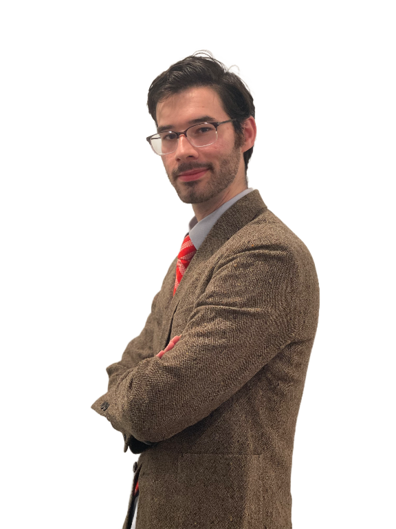

Publication in Cornell University's Logos: The Undergraduate Journal of Philosophy,
August 2024
"William of Ockham and the Primacy of God's Absolute Power"
Essay won third place out of 101 submissions.
Investigated how William of Ockham's voluntaristic understanding of God's Power
affected his understanding of ethics and the ontology of relations.
Publication in Dianoia: The Undergraduate Philosophy Journal of Boston College,
May 2024
"A Natural Interpretation of Aristotelian Teleology"
Essay was one of four selected for publication out of over 40 submissions.
Argued against three popular interpretations of teleology in Aristotle
and presented an alternative view that grounds the end of each substance in its particular nature.
Publication in Colby College's Journal of Writing with and about AI,
Spring 2024
"A Platonic Reading of LLMs"
Proposed a response to Large Language Models (like ChatGPT) in light of what
Plato says about writing in the Phaedrus.
Publication in Tau-USA: A Publication of the National Fraternity of the Secular Franciscan Order,
Spring 2024
"An Explication of St. Francis' 'Canticle of the Sun'"
Essay chosen for publication out of all submissions from high school and college students throughout Maine.
Academic Awards
Recipient of the John Alden Clark Philosophy Essay Prize, May 2024
"The Freedom of God's Creative Act according to Aquinas"
Prize awarded to the student whose submission is deemed by the philosophy faculty of Colby College as most philosophically adept and original.
Placed 3rd in Phi Betta Kappa Sponsored Speech Contest, April 2023
"How Should a Liberal Arts Education Be Structured to Contribute to the Common Good"
Research
Honors Thesis, Expected Completion May 2025
"Plato and Descartes: From Informed Reason to Deformed Logic"
Partook in a semester long course focused on developing my skills as a researcher, writer, and editor.
Will engage in one-on-one supervised research in the second semester.
Thesis argues that Plato and Descartes' respective ontological differences result in them
constructing mutually incompatible epistemologies, despite frequently repeated claims in the
relevant literature that their thought is quite similar in this respect.
Independent Study, January 2024
“The Freedom of God's Creative Act according to Aquinas”
Worked with minimal supervision from a philosophy faculty advisor to research and write an essay on
Aquinas' view of whether God was free when He created the universe.
Work Experience
Colby College, Philosophy Department, Waterville, ME, Tutor, February 2023-Present
Chosen by the professor, based on exceptional performance in the course during the prior semester,
to provide paid one-on-one assistance for college students requiring assistance with abstract logic.
Review homework problems and offer step-by-step corrections on errors.
Explicate in detail difficult or complex concepts to prepare students for exams.
Collaborate with other tutors to provide students with multiple explanations of the same concept.
Paid by Colby College to provide weekly one-on-one instruction for college students struggling in Computer Science.
Report back to Computer Science department the problems and opportunities presentedby by my interactions with students.
Collaborate with fellow teaching assistants to improve student outcomes.
Research and integrate new methods of more effectively communicating ideas.
Volunteer Work
Waterville Food Bank, Food-Runner, February 2024-Present
Engage with food-insecure individuals and assemble together requested food items from the kitchen of the food bank.
Perform ad hoc jobs pertaining to storage management as needed.
Colby College, Philosophy Mentor, September 2023-May 2024
Partnered with an undergraduate philosophy major to instruct her concerning what to expect proceeding forward with the major.
Additionally met with mentee to discuss any particular questions she might have, whether they be academic, personal, or generally philosophical.
About Me

My name is Jordan Smith. I'm a senior at Colby College in Waterville, Maine double majoring in
Philosophy and Computer Science. I'm especially interested in Medieval metaphysics! In my free time, I enjoy reading, writing, running, and whittling.